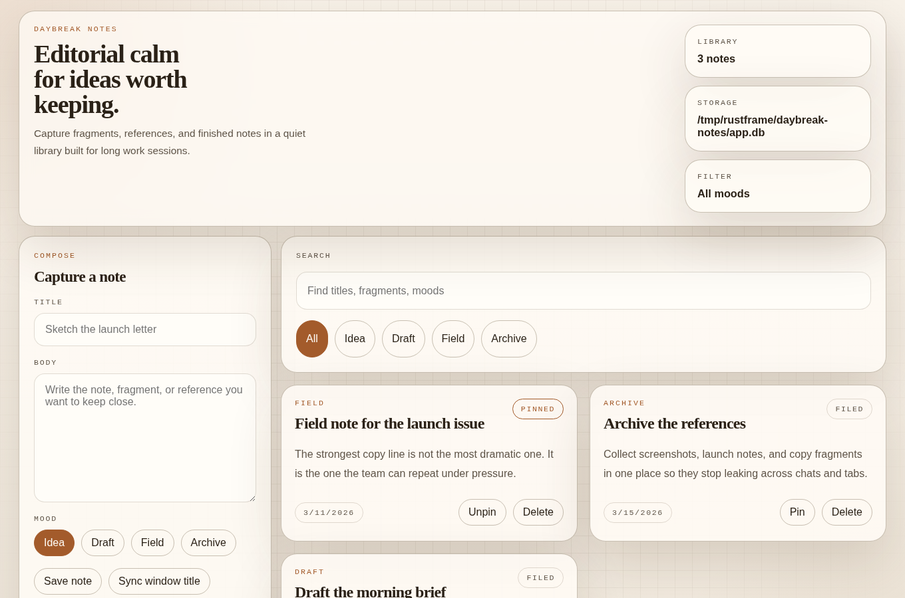
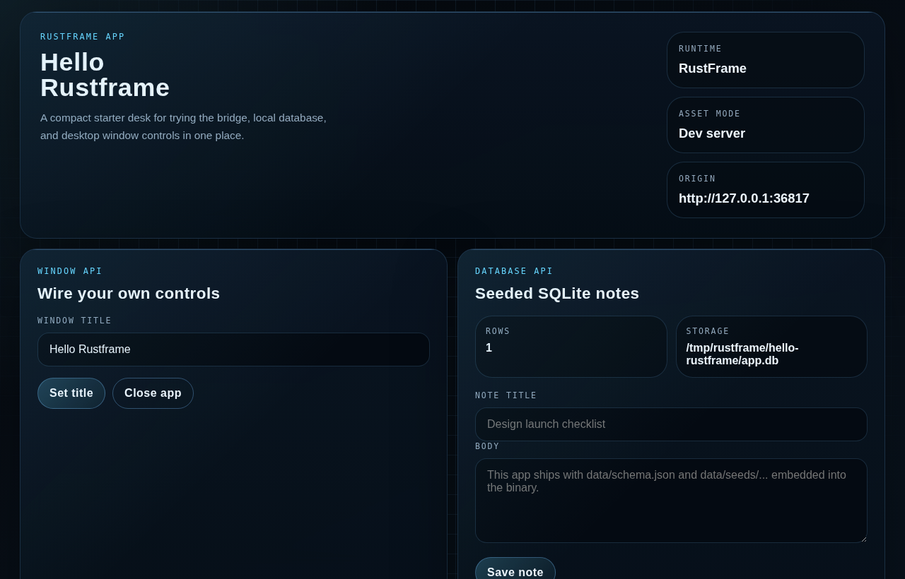

Rust / Tao / Wry
Frontend-first desktop apps without the usual framework pileup.
RustFrame keeps the app folder plain, injects the bridge from the runtime,
drives the app from typed rustframe.json, and only turns on SQLite,
filesystem, or shell access when the manifest and trust model explicitly allow it.
Workspace
What actually lives in this repo
`crates/rustframe`
Owns the desktop shell, injected bridge, multi-window IPC dispatch, SQLite migrations, filesystem scope, trust model, and hardened shell execution.
`crates/rustframe-cli`
Scaffolds apps, parses typed rustframe.json, generates or ejects runners, validates targets, and packages host-native bundles.
`examples/capability-demo`
Shows window controls, scoped file reads, and hardened process execution without a localhost bridge or preload server.
`apps/*`
Ships multiple frontend-first desktop examples ranging from note-taking and task planning to CRM, inventory, and editorial workflows.
Workflow
Keep the app folder plain. Let the runner stay hidden.
Generate an app folder
RustFrame writes index.html, styles.css, app.js, rustframe.json, and an optional data/ directory into apps/<name>/ while the runtime injects the native bridge.
Declare config and boundaries in the manifest
Typed window settings, trust model, capability roots, shell rules, and packaging metadata all live in rustframe.json instead of loose string metadata.
Run through a generated or ejected runner
dev, export, platform-check, and package use the hidden runner by default, while eject gives advanced apps an owned native entrypoint.
Verify and ship on the native host
platform-check validates host toolchain expectations, package builds native bundles, and end-to-end smoke coverage keeps the new/exported runtime path honest.
Runtime Contract
Small native surface, explicit security and packaging boundaries
Primary and secondary windows share one runtime
The runtime can open route-scoped secondary windows while keeping one native event loop and one bridge contract.
Pick a trust model up front
local-first and networked modes expose different bridge surfaces, so native power stays aligned with the frontend trust boundary.
Schema, seeds, and SQL migrations ship together
When data/schema.json exists, RustFrame provisions SQLite, runs versioned data/migrations/*.sql, and keeps additive schema reconciliation in place.
Read access is manifest-scoped
fs.readText(...) only succeeds inside explicitly allowed roots and rejects parent escapes or outside paths.
Execution is allowlisted and hardened
shell.exec(...) only runs declared commands, with explicit arg rules, cwd and env policy, timeouts, and output caps.
Validate targets before packaging
platform-check surfaces native host constraints early, and package produces Linux, Windows, or macOS host-native bundles.
Example Apps
Desktop surfaces already living in the repository

Seeded SQLite example
Atlas CRM
Pipeline lanes, deal capture, and native title sync backed by a `deals` table.
apps/atlas-crm

CRUD surface
Daybreak Notes
A calm local notes library backed by `notes`.

Starter app
Hello Rustframe
The template path for title sync, embedded seeds, and the smallest useful app.
Frontend-only app
Orbit Desk
Task planning, notes, and a focus timer backed by browser storage instead of SQLite.

Media-forward example
Prism Gallery
A bright asset library showing how far the visual layer can move without changing the runtime contract.

Editorial board
Quill Studio
Story lanes, deadlines, and multi-channel workflow backed by a `stories` table.
Docs
Move from the landing page into the actual contract
Docs index
Start with the repo map
Use the docs index to move through the workspace, runtime model, app contract, and example set.
Guide Getting startedRun the demo, scaffold an app, validate the support matrix, export a raw binary, and package a host-native bundle.
Runtime CapabilitiesSee how the injected bridge, trust model, multi-window runtime, SQLite migrations, filesystem roots, and shell hardening fit together.
Contract Frontend app rulesEverything app folders must do to declare config, dev, export, validate, and package without surprises.